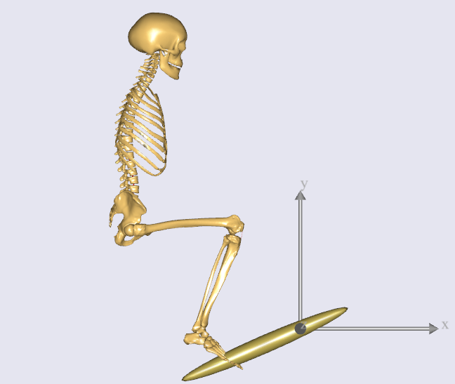

Lesson 3: Making Ends Meet¶
Your model still lacks the the full specifications of how the human and environment (pedal & ground) are connected, and how the model moves.
To ensure that sufficient kinematic information is provided to AnyBody, it is best to start with an inventory check on the degrees of freedom (DOFs) of the model.
Degrees of freedom overview¶
The pedal is simply hinged to the global reference frame, and has the following DOFs:
- 1 DOF of rotation at the hinge.
With no environmental constraints defined so far, the human body has the following DOFs:
- 6 DOF because the body as a whole is currently “floating around in space”
- 3 DOF of the spherical joint between pelvis and thorax rotation
- 3 DOF of the spherical joint at the neck
- 3 DOF of the spherical joint at the hip
- 1 DOF of the revolute joint at the knee
- 2 DOF of rotation (flexion + eversion) at the ankle
Total Human + pedal DOFs adds up to 19. In other words, we to need to specify 19 constraints before the model is kinematically determinate. We will do this using the concepts of “Measures and Drivers” introduced in this previous chapter.
The following steps specify a total of 19 driver constraints for the model:
- Step 1 - 6 DOF constrained by fixing the pelvis rigidly to a point on ground (like a seat).
- Step 2 - 3 DOF constrained by locking all 3 rotations between pelvis-thorax
- Step 3 - 3 DOF constrained by locking all 3 rotations at neck
- Step 4 - 3 DOF constrained by locking 3 translations between pedal and foot (a spherical joint)
- Step 5 - 2 DOF constrained by fixing the 2 ankle DOFs
- Step 6 - 1 DOF constrained by constraining the global, lateral position of the knee
- Step 7 - 1 DOF constrained as pedal rotation at constant velocity
Each of these steps is implemented in sequence below.
The “Default mannequin drivers”¶
Do all 19 driver constraints mentioned above need to be added before a kinematic simulation will work? Yes. But there is one model feature that will make your life easier.
The human model includes “default drivers” which can constrain the human model’s posture to the joint angles and velocities set in the “Mannequin.any” file.
The constraint enforced by the default drivers are defined as ‘soft’ constraints - constraints that be overridden by the 19 ‘hard constraints’ which we will define.
You can therefore sequentially add the 19 hard drivers on top of the soft default drivers, and deactivate the default drivers at the very end of this lesson . The advantage is that you have a model whose kinematics can be tested at every step along the way.
Step 1: Fixing the pelvis to ground¶
The pedal is currently hinged at the origin of the global reference frame. A “seat” node to which we fix the pelvis must therefore be displaced by a suitable distance from the origin.
In the “Environment.any” file, add the following within the “GlobalReferenceFrame” object:
AnyFixedRefFrame GlobalRef = {
AnyRefNode Hpoint = {
sRel = {-0.7, 0.5, 0};
};
}; // Global reference frame
Reload the model (F7).
Hpoint is a term used in the seating industry to characterize the position of the pelvis in a seat. Here we shall simply attach the pelvis to this point by means of a rigid connection.
Drivers which connect the human and environment are traditionally placed in a folder called
“ModelEnvironmentConnection” ( explained here ), and for historical reasons, it is placed in
an #include file called “JointsAndDrivers.any”. Let’s open this file by
double-clicking of the following line in the main file:
...
#include "Model\JointsAndDrivers.any"
...
Then you can see the following structure inside:
AnyFolder Joints =
{
};
AnyFolder Drivers =
{
};
Here let’s prepare an AnyStdJoint object named “SeatPelvis” for the fixation of pelvis:
AnyFolder Joints =
{
AnyStdJoint SeatPelvis =
{
AnyRefFrame& Seat = ;
AnyRefFrame& Pelvis = ;
};
};
As you’d realize by now, both “Seat” and “Pelvis” are references to the two nodes that are being connected by the joint.
The “Seat” node must point to the “Hpoint” node attached to “GlobalRef” frame. “Pelvis” must point to the origin of “PelvisSeg”, which you can find in the model tree at “HumanModel->BodyModel->Trunk->SegmentsLumbar->PelvisSeg”.
To find and insert the absolute paths for these nodes into AnyScript, quickly refer back to this previous section.
You should now have the following:
AnyFolder Joints =
{
AnyStdJoint SeatPelvis =
{
AnyRefFrame& Seat = Main.Model.Environment.GlobalRef.Hpoint;
AnyRefFrame& Pelvis = Main.HumanModel.BodyModel.Trunk.SegmentsLumbar.PelvisSeg;
};
};
Hit F7 to reload the model. The model still loads in the same position as before.
The initial positions are controlled by the mannequin file. Open it up by double-clicking the following line, and make the changes show in red:
...
#path BM_MANNEQUIN_FILE "Model\Mannequin.any"
...
AnyFolder Mannequin = {
AnyFolder Posture = {
//This controls the position of the pelvis wrt. to the global reference frame
AnyVar PelvisPosX = -0.7;
AnyVar PelvisPosY = 0.5;
AnyVar PelvisPosZ = 0;
...
You have specified the load-time position of the pelvis to the coordinates of the “Hpoint” node. It is also a good idea to specify the initial joint angles in the leg so that the foot is closer to the pedal. This can be done further down in the Mannequin file:
AnyFolder Right = {
//Arm
AnyVar SternoClavicularProtraction=-23; //This value is not used for initial position
AnyVar SternoClavicularElevation=11.5; //This value is not used for initial position
AnyVar SternoClavicularAxialRotation=-20; //This value is not used for initial position
AnyVar GlenohumeralFlexion =-0;
AnyVar GlenohumeralAbduction = 10;
AnyVar GlenohumeralExternalRotation = 0;
AnyVar ElbowFlexion = 0.01;
AnyVar ElbowPronation = -20.0;
AnyVar WristFlexion =0;
AnyVar WristAbduction =0;
//Leg
AnyVar HipFlexion = 110.0;
AnyVar HipAbduction = 5.0;
AnyVar HipExternalRotation = 0.0;
AnyVar KneeFlexion = 100.0;
AnyVar AnklePlantarFlexion =0.0;
AnyVar SubTalarEversion =0.0;
...
On reload, you will see that the body now loads in pretty much the desired position. Notice that this is only to bring the body close to where it will eventually be. It is not necessary to align the model exactly with the pedal. The kinematic constraints will take care of this once they are properly defined.
Step 2: Locking pelvis-thorax rotation¶
The only purpose of the trunk in this model is to anchor the psoas muscles which move the leg. So we will set to zero, the angles and velocities of 3 DOF of pelvis-thorax flexion, lateral bending and axial rotation.
We will place the drivers enforcing these constraints in the “Drivers” folder within “JointsAndDrivers.any” (shown below):
AnyFolder Joints =
{
AnyStdJoint SeatPelvis =
{
AnyRefFrame& Seat = Main.Model.Environment.GlobalRef.Hpoint;
AnyRefFrame& Pelvis = Main.HumanModel.BodyModel.Trunk.SegmentsLumbar.PelvisSeg;
};
};
AnyFolder Drivers =
{
};
Insert a”PelvisThoraxDriver” into the Drivers folder, created using the AnyKinEqSimpleDriver class.
You already know how to create model objects from scratch by using the
the “Class Inserter” (described here). More details on properties
such as DriverPos, DriverVel etc. can be (found here) :
AnyFolder Drivers =
{
AnyKinEqSimpleDriver PelvisThoraxDriver =
{
AnyKinMeasure& ref0 = ...HumanModel.BodyModel.Interface.Trunk.PelvisThoraxExtension;
AnyKinMeasure& ref1 = ...HumanModel.BodyModel.Interface.Trunk.PelvisThoraxLateralBending;
AnyKinMeasure& ref2 = ...HumanModel.BodyModel.Interface.Trunk.PelvisThoraxRotation;
DriverPos = pi/180*{0,0,0};
DriverVel = pi/180*{0,0,0};
};
};
Step 3: Locking neck rotation¶
The following lines lock all 3 DOFs of rotation between the skull and the thorax (neck). The drivers are defined in a manner that is very similar to Step 2.
AnyFolder Drivers =
{
AnyKinEqSimpleDriver PelvisThoraxDriver =
{
AnyKinMeasure& ref0 = ...HumanModel.BodyModel.Interface.Trunk.PelvisThoraxExtension;
AnyKinMeasure& ref1 = ...HumanModel.BodyModel.Interface.Trunk.PelvisThoraxLateralBending;
AnyKinMeasure& ref2 = ...HumanModel.BodyModel.Interface.Trunk.PelvisThoraxRotation;
DriverPos = pi/180*{0,0,0};
DriverVel = pi/180*{0,0,0};
};
AnyKinEqSimpleDriver SkullThoraxDriver =
{
AnyKinMeasure& ref0 = ...HumanModel.BodyModel.Interface.Trunk.SkullThoraxFlexion;
AnyKinMeasure& ref1 = ...HumanModel.BodyModel.Interface.Trunk.SkullThoraxLateralBending;
AnyKinMeasure& ref2 = ...HumanModel.BodyModel.Interface.Trunk.SkullThoraxRotation;
DriverPos = pi/180*{0,0,0};
DriverVel = pi/180*{0,0,0};
};
};
Step 4: Connecting the foot to the pedal¶
The foot will be connected to the pedal by a spherical joint. We have assumed the connection node on the foot to be the “MetatarsalJoint2Node”. The driver is defined inside the “JointsAndDrivers.any” file in the following way:
AnyFolder Joints =
{
AnyStdJoint SeatPelvis =
{
AnyRefFrame& Seat = Main.Model.Environment.GlobalRef.Hpoint;
AnyRefFrame& Pelvis = Main.HumanModel.BodyModel.Trunk.SegmentsLumbar.PelvisSeg;
};
AnySphericalJoint PedalFoot =
{
AnyRefFrame& Pedal = Main.Model.Environment.Pedal.FootNode;
AnyRefFrame& Foot = Main.HumanModel.BodyModel.Right.Leg.Seg.Foot.MetatarsalJoint2Node;
};
};
Step 5: Locking the ankle angles¶
In ankle has 2 DOFs - AnklePlantarFlexion and SubTarEversion. We will constrain both
DOFs to always equal zero. Just as in Steps 3 & 4, this will be done using AnyKinEqSimpleDriver:
AnyFolder Drivers =
{
...
AnyKinEqSimpleDriver SkullThoraxDriver =
{
AnyKinMeasure& ref0 = ...HumanModel.BodyModel.Interface.Trunk.SkullThoraxFlexion;
AnyKinMeasure& ref1 = ...HumanModel.BodyModel.Interface.Trunk.SkullThoraxLateralBending;
AnyKinMeasure& ref2 = ...HumanModel.BodyModel.Interface.Trunk.SkullThoraxRotation;
DriverPos = pi/180*{0,0,0};
DriverVel = pi/180*{0,0,0};
};
AnyKinEqSimpleDriver AnkleDriver =
{
AnyKinMeasure& ref0 = ...HumanModel.BodyModel.Interface.Right.AnklePlantarFlexion;
AnyKinMeasure& ref1 = ...HumanModel.BodyModel.Interface.Right.SubTalarEversion;
DriverPos = pi/180*{0, 0};
DriverVel = pi/180*{0, 0};
};
};
Re-loading the model should show no significant differences.
Step 6: Fix the lateral position of the knee¶
Imagine your pelvis on a seat (like in Step 1) and your foot resting at the tip of a sharp spike jutting out of the ground (a spherical joint connection, like in Step 4). You can still move your knee sideways. You will now constrain this medio-lateral knee movement in your model.
This is done using an AnyKinLinear measure and a AnyKinEqSimpleDriver driver acting on that measure
(read more one measures & drivers here):
AnyFolder Drivers =
{
...
AnyKinEqSimpleDriver AnkleDriver =
{
AnyKinMeasure& ref0 = ...HumanModel.BodyModel.Interface.Right.AnklePlantarFlexion;
AnyKinMeasure& ref1 = ...HumanModel.BodyModel.Interface.Right.SubTalarEversion;
DriverPos = pi/180*{0, 0};
DriverVel = pi/180*{0, 0};
};
AnyKinEqSimpleDriver KneeDriver =
{
AnyKinLinear lin =
{
AnyRefFrame& ref0 = Main.Model.Environment.GlobalRef;
AnyRefFrame& ref1 = Main.HumanModel.BodyModel.Right.Leg.Seg.Thigh.KneeJoint;
Ref = 0;
};
MeasureOrganizer = {2};
DriverPos = {0};
DriverVel = {0};
};
};
The AnyKinLinear object measures the 3D position vector between the two reference
frames ref0 and ref1 which it refers to, i.e., in this case, the position of the knee
with respect to the global reference frame.
We however, only wish to constrain the medio-lateral component of this vector, which is the global
“Z” component. We hence specify the MeasureOrganizer property to specify that only the 3rd component of the measure
which is given by the index 2 (0 being X, 1 being Y component) must be constrained by the driver.
Step 7: Specify pedal movement¶
We will specify motion for the pedal’s hinge joint again using the AnyKinEqSimpleDriver.
This resembles what you did in this earlier chapter.
AnyFolder Drivers =
{
...
AnyKinEqSimpleDriver KneeDriver =
{
AnyKinLinear lin =
{
AnyRefFrame& ref0 = Main.Model.Environment.GlobalRef;
AnyRefFrame& ref1 = Main.HumanModel.BodyModel.Right.Leg.Seg.Thigh.KneeJoint;
Ref = 0;
};
MeasureOrganizer = {2};
DriverPos = {0};
DriverVel = {0};
};
AnyKinEqSimpleDriver PedalDriver =
{
AnyKinMeasure &ref0 = Main.Model.Environment.HingeJoint;
DriverPos = pi/180*{100};
DriverVel = pi/180*{45};
};
};
This puts the pedal in an initial 100-degree angle compared to vertical, from where this angle increases as a rate of 45 degrees per second.
For now, hit F7 again to reload the model. Notice that the system no longer complains about the model being kinematically indeterminate.
Running kinematics¶
Select and run the ‘Main.Study.Kinematics’ operation from the operations dropdown menu (more info here). This will show you the movement of the entire system as the pedal is rotating.

Check if model is kinematically determined?¶
Finally, you will check the number of DOFs and the number of kinematic constraints in the simulation from the “Object Description” of your “Study” object. You can find this here:

Then you see the Object Description dialog will open.

This indicates that the total number of DOFs(degrees of freedom) in your model is 132. It makes sense because there are 21 segments in your model and each segment has 6 DOFs.
If you scroll down this dialog a little bit more, then you can see the following section:

The last message in the above screenshot lets us know that there are 150 constraints from the joints and the drivers in the model.
In general, the total number of DOFs in the model should be exactly as same as the total number of kinematic constraints in the model. But at the moment, the number of kinematic constraints is larger than that of DOFs.
In some cases, having more constraints than DOFs (also called a redundant set of constraints) results in a failed kinematic simulation, because the system is over-constrained.
However our AnyBody model seems to work despite this constraint redundancy. Why?
This is because, these 150 - 132 = 18 “extra” constraints were also “soft” constraints enforced by the “default mannequin drivers” described here earlier.
The “DefaultMannequinDrivers” can be found in a subfolder of the “HumanModel” folder, as shown in the figure below. These drivers control the human model’s posture based on the values in the “Mannequin.any” file.

Because these default drivers are defined as “Soft” constraints, they were compromised in favour of the “Hard” constraints specified in Steps 1 to 7 in this document.
This avoided an over-constrained situation and kinematics could therefore be solved.
Since you could define all necessary “Hard” constraints, the default drivers can now be removed by just adding one more BM statement to the main file:
//-->BM statements
// Excluding the muscles in the trunk segments
#define BM_TRUNK_MUSCLES _MUSCLES_NONE_
// Excluding the left arm segments
#define BM_ARM_LEFT OFF
// Excluding the right arm segments
#define BM_ARM_RIGHT OFF
// Excluding the left leg segments
#define BM_LEG_LEFT OFF
// Using the right leg as 'TLEM' model
#define BM_LEG_RIGHT _LEG_MODEL_TLEM1_
// Excluding the muscles in the right leg segments
#define BM_LEG_MUSCLES_RIGHT _MUSCLES_NONE_
// Excluding the default drivers for the human model
#define BM_MANNEQUIN_DRIVER_DEFAULT OFF
//<--
Save the main file and press F7 button to reload the model. And try to open the Object Description dialog of “Study” object in the Model Tree.

You see that now the total number of constraints has been changed to 132 and this is exactly as same as the total number of DOFs. Of course, you can still run the kinematics of your model.
See also
Next lesson: Now that the kinematics is in order let us move on to the kinetic analysis in Lesson 4 and see what the model is good for.
 Please report it here...
Please report it here...{kind=link}